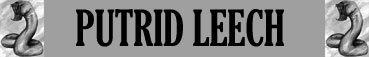

Malattia;
Resistenza Straordinaria all'Acido;

|
|
Ambiente/Habitat | Paludi |
| Frequenza | Uncommon | |
| Organizzazione | Solitary | |
| Periodo di Attività | Qualsiasi | |
| Dieta | Carnivora | |
| Intelligenza | Non Intelligent [0] | |
| Punti Combattimento | Nessuno | |
| Tesoro | Nessuno | |
| Allineamento Dominante | Neutrale | |
| Numero di Apparizione | 1 | |
| Classe Armatura | 5 [10 base, 5 corazza] | |
| Movimento | 6 esagoni /Nuotare 6 esagoni | |
| Dadi Vita | 6 | |
| Thac0 | 14 | |
| Numero di Attacchi | Tocco Urticante | |
| Danni | 3d4 (acido) | |
| Poteri Offensivi | Istinto Predatorio; Malattia; |
|
| Poteri Difensivi | Secrezione Mucosa; Resistenza Straordinaria all'Acido; |
|
| Poteri Generici | Camminata Acquatica; | |
| Vulnerabilità | Nessuna; | |
| Resistenza alla Magia | Nessuna; | |
| Sensi | Senso Primordiale [30 metri]; | |
| Dimensioni | Large (2,5 m. lunghezza) | |
| Morale | Elite (13) | |
| Valore in Punti Esperienza | 879 |
| MODIFICATORI AI TIRI SALVEZZA | |||||||||||||||||||||||
| COR | 0 | 45 | ENV | 0 | 52 | MAG | 0 | 59 | MAL | +10 | 34 | MEN | 0 | 57 | RIF | -5 | 58 | ROB | 0 | 47 | VEL | +5 | 36 |
Descrizione
Questi enormi e viscidi invertebrati sono molto simili a delle sanguisughe giganti. Il loro corpo è molle e flaccido, non hanno una vera e propria bocca quanto piuttosto una ventosa finale ad una delle estremità del corpo con la quale colpiscono il corpo di un della loro vittima con secrezioni acide. Una volta uccisa la vittima, la ricoprono completamente con il corpo per iniziare una lenta assimilazione, sciogliendola con le secrezioni acide delle mucose che escono dai numerosi diverticoli che hanno lungo la parte inferiore del corpo.
Combat
Il Putrid Leech è solito apparire all'improvviso dalle acque melmose delle paludi e colpire con la parte superiore del corpo le vittime bruciando la carne delle stesse con il loro tocco acido che poi assorbiranno un volta ridotto in poltiglia informe. Il contatto con queste immondi invertebrati è molto spesso portatore di una malattia che debilita lentamente il corpo e può portare alla morte.
ISTINTO PREDATORIO (Moderate Special Ability): La creatura possiede un forte istinto predatorio, per tale motivo costei riceve un bonus costante di +1 alla Thac0 con i suoi attacchi.
MALATTIA [TOCCO] (Superior Special Ability): L'attacco indicato di questa creatura è estremamente infettivo. Le creature che sono morse da questo essere, infatti, devono superare immediatamente un tiro salvezza contro malattia per non infettarsi.
Tipo di Contagio:
Esposizione diretta alla fonte
Tiro salvezza:
Malus di - 5 %
Incubazione:
1 giorno
Prima fase: 1d8+2 giorni = Sul corpo della vittima compaiono macchie di color giallo intenso. La vittima avverte una strana sensazione di intorpidimento ricevendo una penalità di +2 a tutte le prove di iniziativa. Tiro salvezza: Nessun Tiro Salvezza Richiesto
Seconda fase: 2d20+10 giorni = Le chiazze diventano di colore grigio scuro e nero ed il corpo della vittima appare spossato dalla malattia con una costante febbre alta. La vittima oltre a subire una penalità di +2 a tutte le prove di iniziativa si considererà incapacitata. Tiro salvezza: Bonus di + 5 %
Terza fase: 1d4+1 giorni = Le chiazze diventano bolle piene di pus e la vittima cade in uno stato comatoso caratterizzato da febbre altissima e tremore. Tiro salvezza: Malus di - 5 %
Ultima fase: Morte della Creatura
Immunizzazione: 1 anno
Note: Nessuna
SECREZIONE MUCOSA (Superior Special Ability): Il corpo della creatura secerne costantemente un muco altamente vischioso. Per questo motivo, quando, un avversario attacca questo essere con un arma da corpo a corpo e la colpisce, lo stesso dovrà superare un tiro salvezza su robustezza modificato dalla forza in luogo della costituzione (senza l'applicazione dei modificatori dovuti alla differenza di livello) dopo ogni colpo per strappare l'arma dal corpo della creatura. Chi utilizza rami a due mani ottiene un bonus di +5% al tiro salvezza. Se il tiro fallisce l'arma non si staccherà ed il possessore potrà decidere se continuare a mantenerla o lasciarla andare. All'inizio di ogni nuovo round, come free action effettuata al tiro puro dell'iniziativa e quindi incompatibile con azioni che è necessario iniziare dall'inizio del round, costui può provare a staccare nuovamente l'arma dal corpo della creatura ripetendo il suddetto tiro salvezza.
RESISTENZA STRAORDINARIA ALL'ACIDO (Typical Ability): Il corpo della creatura è particolarmente resistente ai danni da acido, per tale motivo la stessa subirà solo il 25 % (per difetto) di tutti i danni da acido provocati nei suoi confronti.
CAMMINATA ACQUATICA (Lesser Special Ability): Questa creatura è in grado di spostarsi camminando con il corpo parzialmente immerso nell'acqua riducendo di una classe la penalità al movimento che le sarebbe normalmente applicata. Si noti che quest'abilità non riduce l'eventuale penalità al combattimento prevista per il corpo parzialmente immerso nell'acqua
Habitat/Society
Queste creature vivono nelle zone paludose e negli specchi di acqua putridi abbastanza grandi da poterle contenere. Non hanno una tana, ma non si spostano di molto dalla zona che hanno occupato, per questo motivo molto spesso quelle brevi specchi di acqua insalubre sono assimilabili ad una tana. Non sono considerabili degli esseri sociali, sono anzi solitari e non intelligenti, spinti e tenuti in vita dal solo desiderio di nutrirsi.
Ecology
Per la loro caratteristica urticante e per l'assimilazione delle vittime, vengono considerati dalle altre creature senzienti una sorta di spazzino della palude, che pulisce anche dalle carcasse le zone abitate.
Mystical Resource Sourge (Ghiandola Acida) Quantità: 1, Presenza 50% - Effetto Particolare: Acido - Qualità della Risorsa: Common.